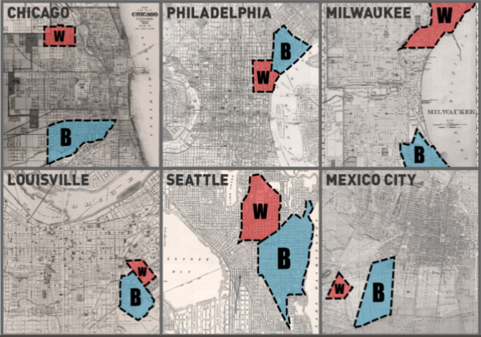

Socality Barbie quit the Internet today. After a meteoric rise to fame and 1.3 million followers, the anti-hipster hipster said goodbye.
Mathematical model explains why all hipsters look the same
“When hipsters are too slow in detecting the trends, they will keep making the same choices and therefore remain correlated as time goes by.”

This Is the Williamsburg of Your City: A Map of Hipster America
What is your city's Williamsburg? What's its hippest—or formerly hippest—or sometimes just youngest—neighborhood, the one with the art galleries and the boutiques and the lines for brunch?